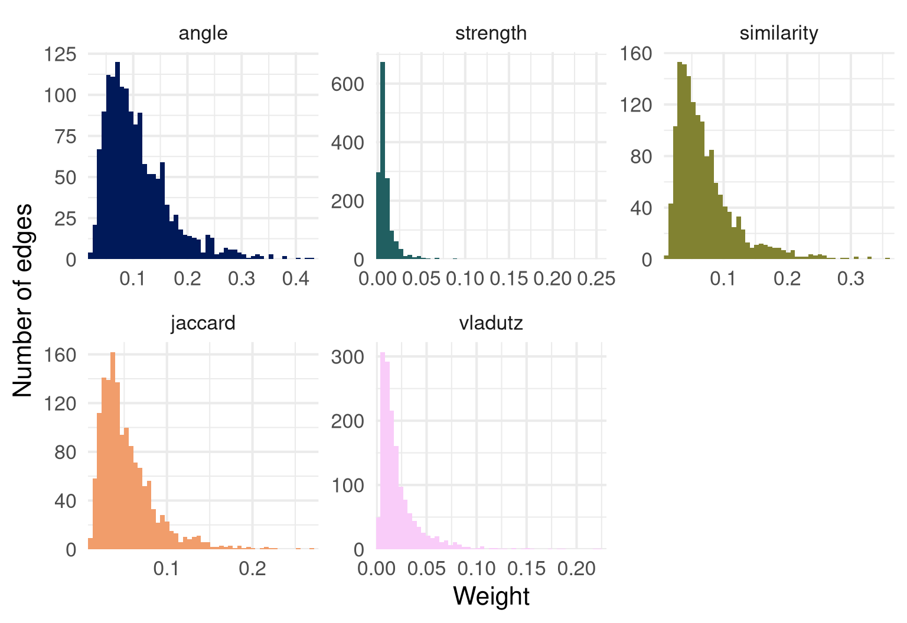
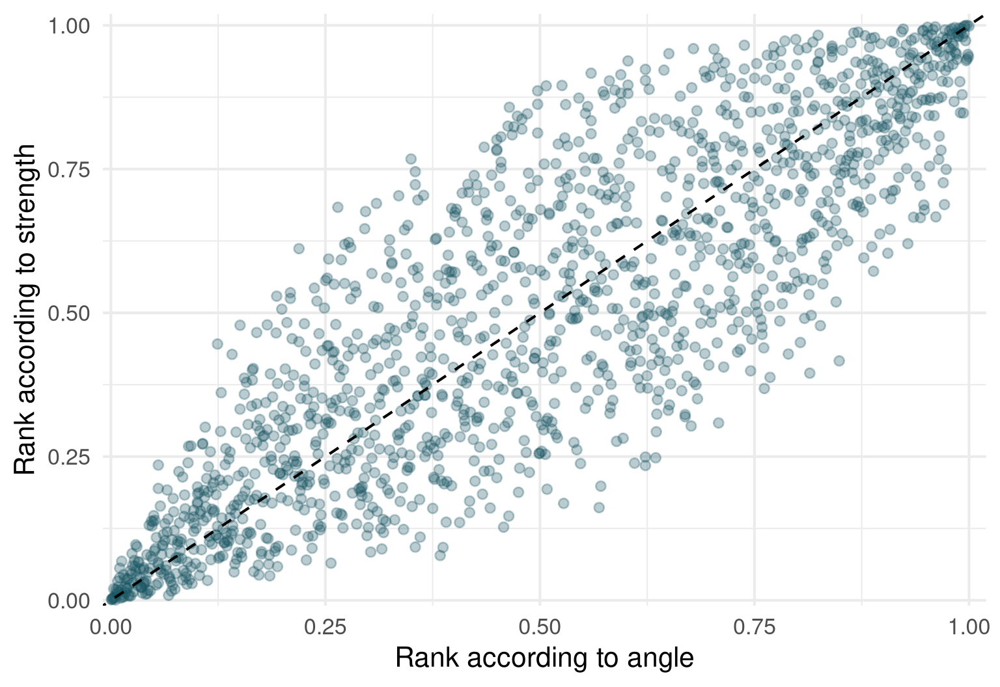

Does the choice of the coupling measure matter? The stagflation corpus
Source:vignettes/comparing_measures.qmd
biblionetwork offers several ways of turning the same table of citations into the weighted edges of a network. This vignette asks a practical question: on a real corpus, how much does the choice of the measure change the network? We use the corpus of the literature explaining the US stagflation of the 1970s (Goutsmedt 2021), included in the package: Ref_stagflation lists the documents that explain the stagflation and the references they cite. We go through five questions: the intuition of each measure, the distribution of their weights, the agreement of their rankings, the pairs on which they disagree, and the communities they produce.
Five ways of saying “these two documents are close”
Two documents are coupled when they cite the same references (Kessler 1963). All the measures start from the number of shared references, and differ in what they do with it. The intuition of each is detailed in the documentation of the function; here is the short version.
| Measure | Function | Intuition |
|---|---|---|
| Coupling angle | coupling_angle() |
Shared references, relative to the length of the two bibliographies (a cosine) (Sen and Gan 1983). Two shopping lists with many common items. |
| Jaccard | coupling_jaccard() |
Of everything the two documents cite, the share they cite both. Penalises more strongly bibliographies of very different lengths. |
| Coupling strength | coupling_strength() |
A shared rare reference counts more than a shared classic, with the weight \log(N/f_j) of the tf-idf (Vladutz and Cook 1984; Shen et al. 2019). |
| Similarity | coupling_similarity() |
The same idea, but as a cosine: the “informational size” of a bibliography is the total rarity of its references (Shen et al. 2019). |
| Vladutz-Cook | coupling_vladutz() |
A shared reference counts 1/f_j: a very steep discount of popular references (Vladutz and Cook 1984). |
compute_couplings() computes them all on the same pairs of documents. We keep the pairs sharing at least two references, a common way of ignoring the weakest ties.
edges <- compute_couplings(Ref_stagflation,
source = "Citing_ItemID_Ref",
ref = "ItemID_Ref",
weight_threshold = 2)
sapply(edges, nrow)#> angle strength similarity jaccard vladutz
#> 1501 1501 1501 1501 1501All the measures describe the same 1501 edges: they only differ by the weight given to each.
The distributions of the weights
The measures do not have the same scale: the cosines and the Jaccard index are bounded by 1, the coupling strength is not, and the typical values differ. The means and quantiles are therefore not comparable across measures. The last column, ratio_q99_median, is: the larger it is, the heavier the right tail (a few very strong ties, many weak ones).
summarise_weights(edges)[, .(method, n_edges, mean = round(mean, 3), median = round(q50, 3),
q99 = round(q99, 3), max = round(max, 3),
ratio_q99_median = round(ratio_q99_median, 1))]#> method n_edges mean median q99 max ratio_q99_median
#> <char> <int> <num> <num> <num> <num> <num>
#> 1: angle 1501 0.108 0.093 0.312 0.429 3.4
#> 2: strength 1501 0.009 0.006 0.051 0.254 8.4
#> 3: similarity 1501 0.071 0.058 0.249 0.358 4.3
#> 4: jaccard 1501 0.054 0.044 0.176 0.269 4.0
#> 5: vladutz 1501 0.022 0.015 0.113 0.223 7.6
plot_weights(edges)
Measures that discount popular references (strength, Vladutz-Cook) have heavier right tails than the cosines: the weights are concentrated on a minority of pairs that share rare references. If you later filter edges with a weight threshold, or use a community detection algorithm sensitive to the weights, this shape matters.
Do the measures rank the pairs in the same way?
The scale differs but what matters in most uses (a threshold, a “top 10%”, a community detection) is the order of the pairs. correlate_weights() computes the Spearman rank correlation between measures (1: same ranking).
round(correlate_weights(edges), 2)#> angle strength similarity jaccard vladutz
#> angle 1.00 0.85 0.96 0.98 0.69
#> strength 0.85 1.00 0.90 0.81 0.73
#> similarity 0.96 0.90 1.00 0.94 0.84
#> jaccard 0.98 0.81 0.94 1.00 0.70
#> vladutz 0.69 0.73 0.84 0.70 1.00
#> attr(,"n_pairs")
#> [1] 1501Correlations are one thing; overlap_top_weights() asks a question closer to network analysis: among the 10% strongest edges of each measure, how many are shared by two measures?
round(overlap_top_weights(edges, top = 0.1), 2)#> angle strength similarity jaccard vladutz
#> angle 1.00 0.39 0.77 0.79 0.40
#> strength 0.39 1.00 0.45 0.37 0.35
#> similarity 0.77 0.45 1.00 0.66 0.50
#> jaccard 0.79 0.37 0.66 1.00 0.38
#> vladutz 0.40 0.35 0.50 0.38 1.00
#> attr(,"n_top")
#> angle strength similarity jaccard vladutz
#> 151 151 151 151 151
plot_weights(edges, type = "scatter", x = "angle", y = "strength")
The measures that only normalise the number of shared references (angle, Jaccard) and the idf cosine are close. The measures that discount popular references (strength, Vladutz-Cook) form another group, which agrees less with the first one, especially among the strongest edges. This is the pattern that Shen et al. (2019) report on a corpus of library and information science documents (a very high correlation between the angle and the idf similarity, a lower one with the others): it holds here too.
Where do they disagree? Pairs of documents
Let us look at the pairs on which the coupling angle and the coupling strength disagree the most. merge_weights() puts the weights side by side, ranks the pairs under each measure (rank 1: the strongest pair) and, for two measures, computes the rank gap: the rank under the second measure minus the rank under the first. A large positive gap means that the first measure finds the pair close and the second does not. We then label the documents with Nodes_stagflation.
ranks <- merge_weights(edges[c("angle", "strength")], rank_gap = c("angle", "strength"))
labels <- unique(Nodes_stagflation[, .(ItemID_Ref, Author_date)])
ranks[, `:=`(document_1 = labels$Author_date[match(Source, labels$ItemID_Ref)],
document_2 = labels$Author_date[match(Target, labels$ItemID_Ref)])]
show <- function(x) x[, .(document_1, document_2, angle = round(angle, 2), strength = round(strength, 3),
rank_angle, rank_strength, rank_gap)]Pairs that the angle ranks high and the strength ranks low: they share many references, but mostly popular ones.
show(ranks[order(-rank_gap)][1:5])#> document_1 document_2 angle strength rank_angle rank_strength
#> <char> <char> <num> <num> <num> <num>
#> 1: HETZEL-R-2008 MELTZER-A-2005 0.16 0.005 228.0 877
#> 2: HETZEL-R-2008 PRIMICERI-G-2006 0.15 0.005 279.5 909
#> 3: HETZEL-R-2008 ORPHANIDES-A-2003b 0.10 0.003 648.0 1260
#> 4: PRIMICERI-G-2006 LEVIN-A-2013 0.13 0.004 439.0 1039
#> 5: HETZEL-R-2008 DICECIO-C-2013 0.14 0.005 359.0 949
#> rank_gap
#> <num>
#> 1: 649.0
#> 2: 629.5
#> 3: 612.0
#> 4: 600.0
#> 5: 590.0Pairs that the strength ranks higher than the angle: they share fewer references, but rare ones.
show(ranks[order(rank_gap)][1:5])#> document_1 document_2 angle strength rank_angle rank_strength
#> <char> <char> <num> <num> <num> <num>
#> 1: HELLIWELL-J-1988 GRUBB-D-1982 0.07 0.009 1105.0 476
#> 2: BRUNO-M-1984 GRUBB-D-1982 0.07 0.011 977.0 350
#> 3: GORDON-R-1975b MORK-K-1978a 0.09 0.015 805.0 215
#> 4: BALL-L-1995a ROTEMBERG-J-1996 0.06 0.008 1173.0 584
#> 5: RASCHE-R-1981 TATOM-J-1978 0.08 0.011 969.5 383
#> rank_gap
#> <num>
#> 1: -629.0
#> 2: -627.0
#> 3: -590.0
#> 4: -589.0
#> 5: -586.5To understand a pair, look at the references it shares. For the pair with the largest rank gap:
pair <- ranks[order(-rank_gap)][1]
refs_of <- function(id) Ref_stagflation$ItemID_Ref[Ref_stagflation$Citing_ItemID_Ref == id]
shared <- intersect(refs_of(pair$Source), refs_of(pair$Target))
n_citing <- table(Ref_stagflation$ItemID_Ref)
data.table(reference = labels$Author_date[match(shared, labels$ItemID_Ref)],
cited_by_n_documents = as.integer(n_citing[as.character(shared)]))[order(-cited_by_n_documents)]#> reference cited_by_n_documents
#> <char> <int>
#> 1: SARGENT-T-1999 32
#> 2: CLARIDA-R-2000 28
#> 3: ORPHANIDES-A-2003a 26
#> 4: FRIEDMAN-M-1968a 20
#> 5: TAYLOR-J-1999a 18
#> 6: MAYER-T-1998 16
#> 7: BARRO-R-1983a 14
#> 8: HETZEL-R-1998 12
#> 9: MELTZER-A-2010 11
#> 10: NELSON-E-2005 11
#> 11: LUCAS-R-1972a 10
#> 12: BORDO-M-1999 3The measure answers a question, and the question is not the same: do these documents cite the same things? (angle) or do they cite the same things that few others cite? (strength). Which one you need depends on your research question: mapping the shared foundations of the corpus, or its specialised sub-communities.
Does it change the communities?
A network is rarely an end in itself: the usual next step is to detect communities. We run the Louvain algorithm on the weighted network of each measure, and compare the partitions with the adjusted Rand index (1: identical partitions, around 0: as different as random ones).
set.seed(2024)
partitions <- lapply(edges, function(x) {
graph <- igraph::graph_from_data_frame(x[, .(from = Source, to = Target, weight)], directed = FALSE)
igraph::cluster_louvain(graph)
})
data.table(measure = names(partitions),
communities = sapply(partitions, length),
modularity = round(sapply(partitions, igraph::modularity), 2))#> measure communities modularity
#> <char> <int> <num>
#> 1: angle 7 0.31
#> 2: strength 9 0.46
#> 3: similarity 7 0.35
#> 4: jaccard 7 0.31
#> 5: vladutz 7 0.45
membership <- sapply(partitions, function(p) igraph::membership(p)[names(igraph::membership(partitions$angle))])
agreement <- outer(names(partitions), names(partitions),
Vectorize(function(a, b) igraph::compare(membership[, a], membership[, b], method = "adjusted.rand")))
dimnames(agreement) <- list(names(partitions), names(partitions))
round(agreement, 2)#> angle strength similarity jaccard vladutz
#> angle 1.00 0.63 0.94 0.90 0.65
#> strength 0.63 1.00 0.61 0.64 0.69
#> similarity 0.94 0.61 1.00 0.90 0.70
#> jaccard 0.90 0.64 0.90 1.00 0.70
#> vladutz 0.65 0.69 0.70 0.70 1.00The idf-weighted measures do not just reweight the edges: they can regroup the documents differently. The partitions of the angle, the Jaccard index and the idf similarity are close to each other, while the partitions of the coupling strength and Vladutz-Cook are further away from them. (Louvain is a stochastic algorithm, and the exact numbers depend on the seed and on the version of igraph: what matters is the order of magnitude of the differences.)
Once you know that the partitions differ, the substantive work is to read them: who are the documents of the communities that change? networkflow provides the tools to name and plot the communities.
Co-citation: the mirror image
biblio_cocitation() links cited references that are cited together. The same measures exist, with the roles swapped: the shared items are now the citing documents. With the idf measures, a document that cites few references is a more specific witness of the closeness of two references than a document that cites many (see ?biblio_cocitation).
cocitation <- compute_couplings(Ref_stagflation,
source = "Citing_ItemID_Ref",
ref = "ItemID_Ref",
weight_threshold = 2,
network = "cocitation")
sapply(cocitation, nrow)#> angle strength similarity jaccard vladutz
#> 4499 4499 4499 4499 4499
round(correlate_weights(cocitation), 2)#> angle strength similarity jaccard vladutz
#> angle 1.00 0.91 0.99 0.95 0.72
#> strength 0.91 1.00 0.91 0.85 0.66
#> similarity 0.99 0.91 1.00 0.95 0.77
#> jaccard 0.95 0.85 0.95 1.00 0.78
#> vladutz 0.72 0.66 0.77 0.78 1.00
#> attr(,"n_pairs")
#> [1] 4499
round(overlap_top_weights(cocitation, top = 0.1), 2)#> angle strength similarity jaccard vladutz
#> angle 1.00 0.67 0.93 0.96 0.28
#> strength 0.67 1.00 0.71 0.65 0.33
#> similarity 0.93 0.71 1.00 0.89 0.30
#> jaccard 0.96 0.65 0.89 1.00 0.29
#> vladutz 0.28 0.33 0.30 0.29 1.00
#> attr(,"n_top")
#> angle strength similarity jaccard vladutz
#> 450 450 450 470 450Authors rather than documents: the entity level
entity_network() does not add a measure: it computes the measures above for entities (here the first authors of the stagflation documents) rather than documents, through the documents they publish, with the minimum rule of Zhao and Strotmann (2008). It accepts all the methods ("angle", "strength", "similarity", "jaccard", "vladutz"), and network = "cocitation" for the entities of the cited references.
Ref_stagflation$Citing_ItemID_Ref <- as.character(Ref_stagflation$Citing_ItemID_Ref)
entity_citations <- merge(Ref_stagflation, Nodes_stagflation,
by.x = "Citing_ItemID_Ref", by.y = "ItemID_Ref")
methods <- c("angle", "strength", "similarity", "jaccard", "vladutz")
entities <- lapply(methods, function(method) {
entity_network(entity_citations, source = "Citing_ItemID_Ref", ref = "ItemID_Ref",
entity = "Author.y", weight_threshold = 2, method = method)
})
names(entities) <- methods
sapply(entities, nrow)#> angle strength similarity jaccard vladutz
#> 946 946 946 946 946
round(correlate_weights(entities), 2)#> angle strength similarity jaccard vladutz
#> angle 1.00 0.83 0.96 0.97 0.71
#> strength 0.83 1.00 0.87 0.83 0.74
#> similarity 0.96 0.87 1.00 0.92 0.85
#> jaccard 0.97 0.83 0.92 1.00 0.73
#> vladutz 0.71 0.74 0.85 0.73 1.00
#> attr(,"n_pairs")
#> [1] 946A sixth measure, not computed by default: using the titles
coupling_descriptive() is the DescriptiveBC measure of Liu (2017): two documents can be coupled even if they cite different references, provided that the titles of these references share words. It is not one of the measures computed by default by compute_couplings(), since its cost grows with the square of the number of documents, and its pairs are not the same as the others (documents sharing no reference can be linked). You can ask for it with methods = "descriptive" and the column of the titles; the function says so with a message. On a large corpus, restrict it to some targets through descriptive_args.
with_titles <- compute_couplings(Ref_stagflation,
source = "Citing_ItemID_Ref",
ref = "ItemID_Ref",
methods = c("angle", "descriptive"),
weight_threshold = 2,
title = "Title",
descriptive_args = list(stopwords = c("the", "of", "and", "a", "in", "on", "for", "to")))
merge_weights(with_titles)[order(-descriptive)][1:5]#> Source Target angle descriptive rank_angle rank_descriptive
#> <char> <char> <num> <num> <num> <num>
#> 1: 106566092 22082000 0.4206671 0.5503356 2.0 1
#> 2: 1111111150 25091445 0.4291975 0.4981252 1.0 2
#> 3: 101742296 106566093 0.3380617 0.4976126 9.5 3
#> 4: 106371053 22082000 0.3579170 0.4882313 6.0 4
#> 5: 106566093 1111111117 0.3563483 0.4837800 7.0 5
#> rank_gap
#> <num>
#> 1: -1.0
#> 2: 1.0
#> 3: -6.5
#> 4: -2.0
#> 5: -2.0Some references have several different titles in the table (the function warns, and uses the first); the pairs of documents of descriptive are far more numerous than those of the other measures, which only link documents sharing at least two references. The ranks are computed on the pairs the two measures have in common.
What to remember
- The measures answer different questions. The angle and the Jaccard index ask whether two documents cite the same things; the strength, the similarity and Vladutz-Cook ask whether they cite the same things that few others cite. The cosine form of the similarity makes it comparable in scale to the angle.
-
The choice can change the communities, not only the weights. Check on your corpus, as done here, before choosing:
compute_couplings()makes it a matter of a few lines. - Report the measure. Since the measures do not give the same networks, a study should state which one it uses, and why.